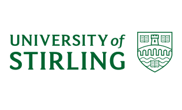

Participant Information Sheet
Research Project Title: Referential communication
Background, aims of project
You're invited to take part in a study investigating how language users achieve successful communication verbally. We hope this will enhance our understanding of the processes that underlie language communication.
Why have I been invited to take part?
You have been asked to participate because we want to understand how native speakers of British English, who are monolingual and non-dyslexic, and are aged less than 30 years old, produce descriptions.
Do I have to take part?
No, you don't have to take part, and participation in this study is voluntary. You may withdraw from this study at any time without giving a reason and without getting any penalty.
What will happen if I take part?
You will be asked to describe common objects to the hypothetical listener. The experiment takes approximately 25-30 minutes.
Are there any potential risks in taking part?
There is no known risk involved in this study.
Are there any benefits in taking part?
You will receive £5 or 1.5 course credit token (if you are a University of Stirling psychology undergraduate student eligible for the course credit scheme).
What happens to the data I provide?
The research data will be anonymised and only the research team will have access to these data.
Analyses
We will analyse participants' descriptions. Only the research team will have access to the anonymised responses.
Future uses of the data
Due to the nature of this research, it is very likely that other researchers may find the data to be useful in answering other research questions. We will ask for your explicit consent for your anonymised responses to be kept for a minimum of 10 years and shared in this way and, if you agree, we will ensure that the data collected is untraceable back to you before letting others use it.
Will the research be published?
The findings from this research will be published in journals and conference proceedings. You will not be identifiable in any report or publication. The University of Stirling is committed to making the outputs of research publicly accessible and supports this commitment through our online open access repository STORRE. Unless publisher requirements prevent us this research will be publicly disseminated through our open access repository.
Who has reviewed this research project?
This project has been ethically approved via The University of Stirling General University Ethics Panel.
Your rights
You have the right to request to see a copy of the information we hold about you and to request corrections or deletions of the information that is no longer required.
Before the completion of your participation, you have the right to withdraw from this project at any time without giving reasons and without consequences to you. You also have the right to object to us processing your data however, please note that once you have completed your participation, it may not be possible to remove your data from the study.
Who do I contact if I have concerns about this study or I wish to complain?
If you would like to discuss the research with someone, please get in touch with myself at kumiko.fukumura@stir.ac.uk. If you might wish to discuss further, please contact: Dr Paul Dudchenko <p.a.dudchenko@stir.ac.uk>, Head of Psychology, Natural Sciences.
You have the right to lodge a complaint against the University regarding data protection issues with the Information Commissioner's Office (https://ico.org.uk/concerns/). The University's Data Protection Officer is Joanna Morrow, Deputy Secretary. If you have any questions relating to data protection these can be addressed to data.protection@stir.ac.uk in the first instance.
Please click on "Agree" if:
You have read and understood the above information and
You agree to take part voluntarily.
You are a native speaker of British English, aged 18-30, and have no difficulty with visual processing.
Otherwise, please close the browse now - thank you very much for your interest in this project.